library(igraph)
library(networkdata)
library(blockmodeling)
library(netUtils)4 Cohesive Subgroups
In this chapter, we explore cohesive subgroups within networks, focusing on cliques, community detection, blockmodeling, and core-periphery structures. Each concept offers a different way to examine how nodes cluster based on connectivity, from tightly-knit cliques, where every member is connected, to broader communities grouped by denser internal links. Blockmodeling abstracts these patterns into roles and relationships, while core-periphery structures reveal hierarchical organization with central and peripheral actors.
4.1 Packages Needed for this Chapter
4.2 Cliques
The simplest and most strict notion of a cohesive subgroup is the clique: a set of nodes where every pair is directly connected, forming a complete subgraph. In social terms, a clique is a group where everyone knows everyone else. A maximal clique is a clique that cannot be extended by adding more nodes while keeping this property. It is as large as it can be.
The networkdata package includes a small example graph called clique_graph which we use as an illustration for various clique concepts (see Figure 4.1).
data("clique_graph")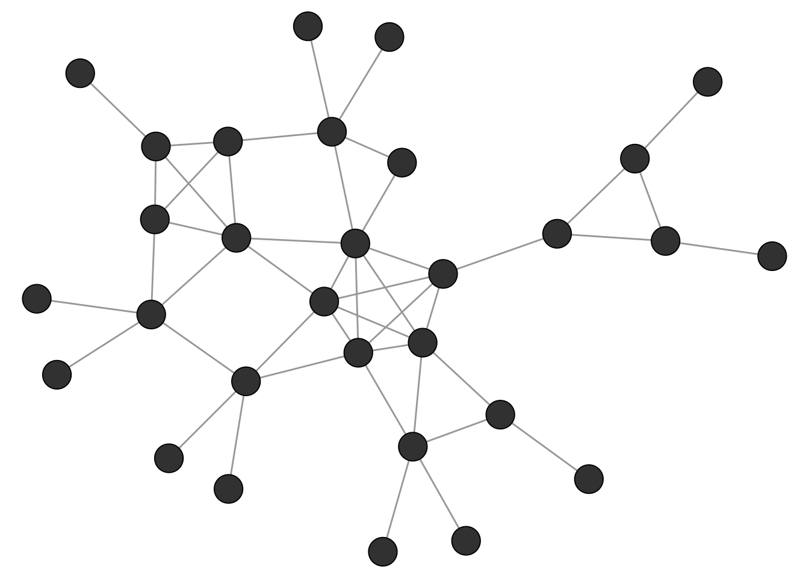
Maximal cliques can be calculated with the max_cliques() function of igraph. Note that this is only feasible for fairly small networks given the complexity of the task. The min parameter can be used to set a minimum size of discovered cliques. Below, we are only interested to find maximal cliques of size 3 or more.
# only return cliques with three or more nodes
cl <- max_cliques(clique_graph, min = 3)
cl[[1]]
+ 3/30 vertices, from 0193e05:
[1] 9 17 18
[[2]]
+ 3/30 vertices, from 0193e05:
[1] 7 4 5
[[3]]
+ 3/30 vertices, from 0193e05:
[1] 7 4 8
[[4]]
+ 3/30 vertices, from 0193e05:
[1] 10 2 11
[[5]]
+ 3/30 vertices, from 0193e05:
[1] 16 12 15
[[6]]
+ 3/30 vertices, from 0193e05:
[1] 6 1 5
[[7]]
+ 4/30 vertices, from 0193e05:
[1] 12 13 15 14
[[8]]
+ 3/30 vertices, from 0193e05:
[1] 12 2 1
[[9]]
+ 5/30 vertices, from 0193e05:
[1] 1 2 5 4 3There is also a max parameter which allows to set a maximum size of discovered cliques.
Figure 4.2 shows the network and the uncovered maximal cliques.
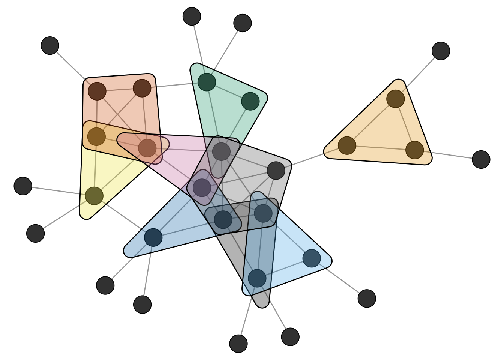
Related to cliques is the k-core decomposition of a network. A k-core is a subgraph in which every node has at least k neighbors within the subgraph. A k-core is thus a relaxed version of a clique.
The function coreness() of igraph can be used to calculate the k-core membership for each node.
kcore <- coreness(clique_graph)
kcore [1] 4 4 4 4 4 3 2 2 2 2 2 3 3 3 3 3 2 2 1 1 1 1 1 1 1 1 1 1 1 1Figure 4.3 shows the k-core decomposition of the example network. The nested hulls show the 2-core, 3-core, and 4-core. Note that the 4-core is not a clique since not all nodes are connected to each other, but it is still a cohesive subgroup in the sense that every node has at least 4 neighbors within the group.
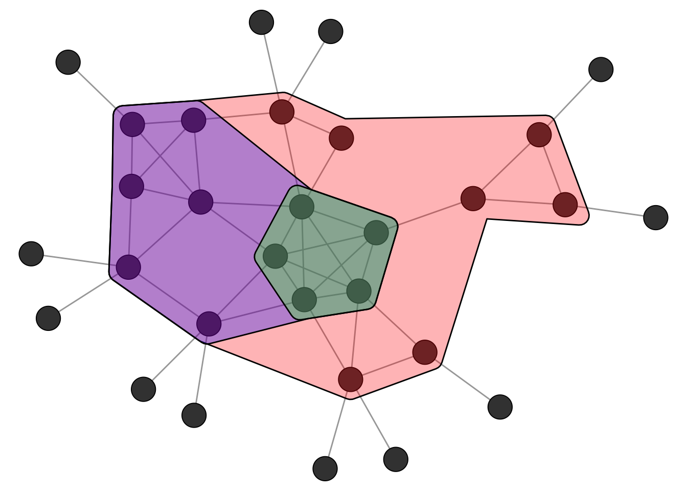
Cliques are the prototypical and most strict definition of a cohesive subgroup in a network. In empirical networks, however, we rarely encounter situations where we can partition the whole network into a set of cliques. Real networks are messy: ties are missing, groups overlap, and boundaries are fuzzy. We therefore need methods that find approximate groupings based on the overall pattern of connections rather than requiring every possible tie to be present.
4.3 Community Detection
Unlike cliques, which have a precise mathematical definition, the notion of a “community” or “cluster” in a network is inherently fuzzy. The general intuition, however, is straightforward: a community is a group of nodes that are more densely connected to each other than to the rest of the network. But there is no universally accepted formal definition of what this actually means. How dense is dense enough? How sparse must the connections to outsiders be? Different algorithms operationalise this intuition in different ways, which is why they can produce different results on the same network. This is not a flaw but a reflection of the fact that “community” is a flexible concept whose meaning depends on the context of the analysis.
Figure 4.4 shows a network with a visible and intuitive cluster structure.
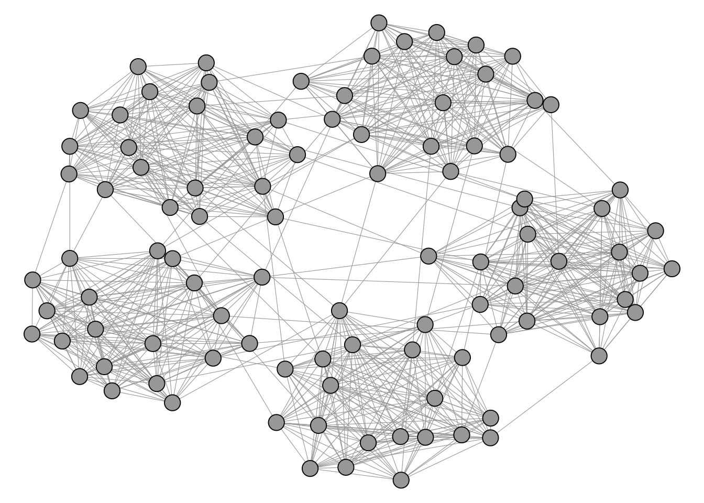
In contrast, the network in Figure 4.5 does not really seem to have any well defined cluster structure on first sight.
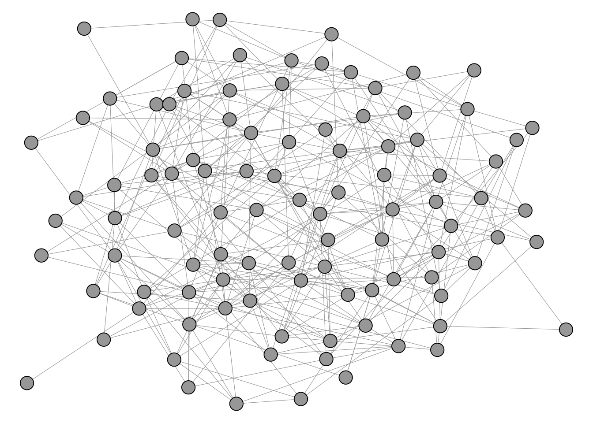
The igraph package includes a number of different clustering algorithms as shown below.
[1] "cluster_edge_betweenness" "cluster_fast_greedy"
[3] "cluster_fluid_communities" "cluster_infomap"
[5] "cluster_label_prop" "cluster_leading_eigen"
[7] "cluster_leiden" "cluster_louvain"
[9] "cluster_optimal" "cluster_spinglass"
[11] "cluster_walktrap" Most of these algorithms are based on “modularity maximization”. The idea behind modularity is to compare the observed number of edges within groups to what we would expect if edges were placed at random while preserving each node’s degree. Formally, modularity is defined as
\[ Q = \frac{1}{2m} \sum_{ij} \left[ A_{ij} - \frac{k_i k_j}{2m} \right] \delta(c_i, c_j) \]
where \(m\) is the total number of edges, \(A_{ij}\) is the adjacency matrix entry (1 if nodes \(i\) and \(j\) are connected, 0 otherwise), \(k_i\) is the degree of node \(i\), and \(\delta(c_i, c_j)\) equals 1 if nodes \(i\) and \(j\) are assigned to the same community and 0 otherwise. The term \(\frac{k_i k_j}{2m}\) is the expected number of edges between \(i\) and \(j\) under a null model that preserves degree. Modularity values typically range from around \(-0.5\) to \(1\), where values close to zero indicate no more within-group edges than expected by chance, and higher values indicate stronger community structure.
The workflow of a cluster analysis is always the same, independent from the chosen method. We illustrate the workflow using the infamous karate club network, already encountered in Chapter 3. This network was collected by Wayne Zachary in the 1970s and it captures friendships among 34 members of a university karate club. During the study, a conflict between the club’s instructor and the administrator led to the club splitting into two factions, making it a classic benchmark for community detection.
data("karate")The network is shown in Figure 4.6.
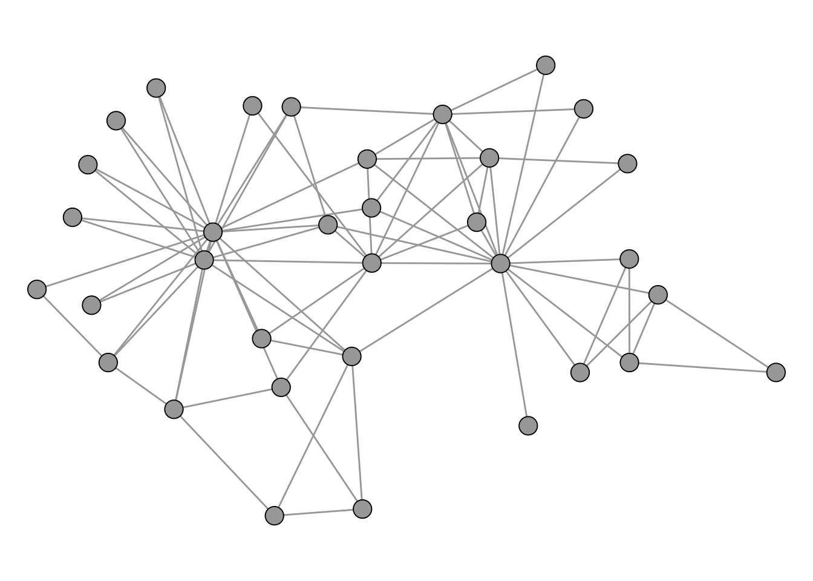
For the cluster analysis, we first pick an algorithm and run it on the network. Here, we use the Louvain method (Blondel et al. 2008) for modularity maximization via cluster_louvain(). The result is a community object from which we can extract a membership vector (which community each node belongs to) and a list of communities (which nodes belong to each community).
## compute clustering
clu <- cluster_louvain(karate)
## cluster membership vector
mem <- membership(clu)
mem [1] 1 1 1 1 2 2 2 1 3 1 2 1 1 1 3 3 2 1 3 1 3 1 3 4 4 4 3 4 4 3 3 4 3 3## clusters as list
com <- communities(clu)
com$`1`
[1] 1 2 3 4 8 10 12 13 14 18 20 22
$`2`
[1] 5 6 7 11 17
$`3`
[1] 9 15 16 19 21 23 27 30 31 33 34
$`4`
[1] 24 25 26 28 29 32Finding the partition that maximises modularity is a computationally hard problem (NP-hard, to be precise). No algorithm can guarantee finding the global optimum in reasonable time, so all practical methods rely on heuristics, such as the fast greedy approach (Clauset et al. 2004). Different heuristics explore the space of possible partitions in different ways, which means they can arrive at different solutions on the same network. To see how much results vary, we run several algorithms and compare their modularity scores.
imc <- cluster_infomap(karate)
lec <- cluster_leading_eigen(karate)
loc <- cluster_louvain(karate)
sgc <- cluster_spinglass(karate)
wtc <- cluster_walktrap(karate)
scores <- c(
infomap = modularity(karate, membership(imc)),
eigen = modularity(karate, membership(lec)),
louvain = modularity(karate, membership(loc)),
spinglass = modularity(karate, membership(sgc)),
walk = modularity(karate, membership(wtc))
)
scores infomap eigen louvain spinglass walk
0.4020381 0.3934089 0.4197896 0.4188034 0.3532216 For the karate network, cluster_spinglass() produces the highest modularity score. In practice, the choice of algorithm depends on more than just modularity. cluster_louvain() scales well to large networks. There does exist an algorithm which is guaranteed to find the optimal partition, implemented in cluster_optimal(), but it is only suitable for very small networks (up to around 100 nodes). Hence, for the karate network, we can actually compute the optimal partition and compare it to the results of the heuristics.
optc <- cluster_optimal(karate)
modularity(karate, membership(optc))[1] 0.4197896In this case, the spinglass algorithm actually found the optimal partition, which is not a common occurrence. The corresponding clustering of the optimal solution is shown in Figure 4.7.
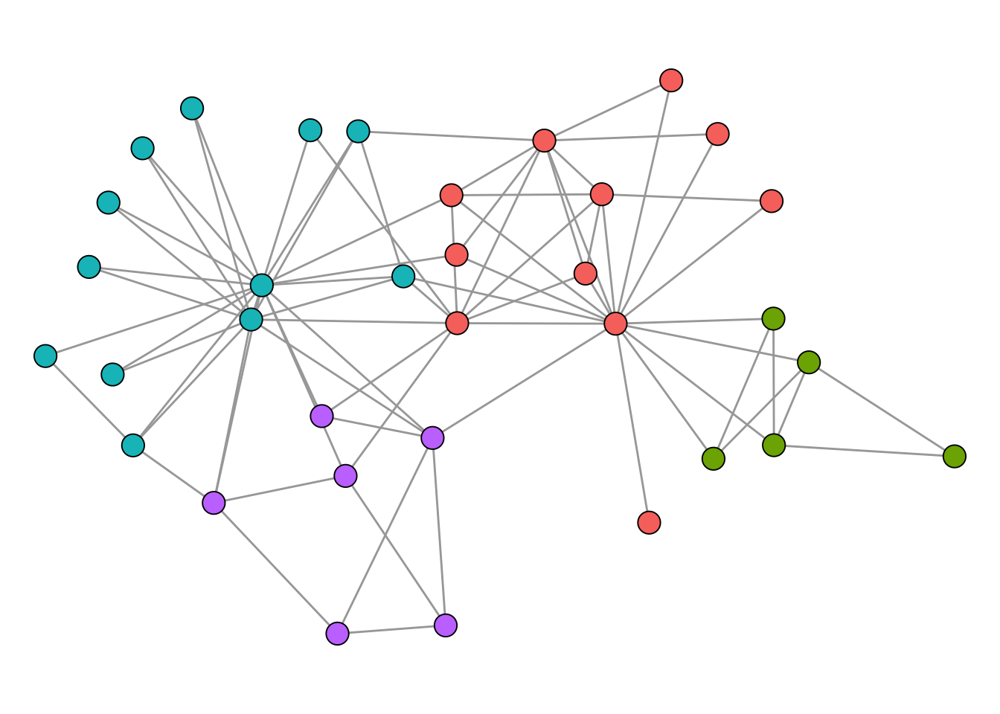
Modularity maximization is still widely considered as the state-of-the-art clustering method for networks. There are, however, some technical shortcomings that one should be aware of. One of those is the so called “resolution limit”. When modularity is being maximized, it can happen that smaller clusters are merged together to form bigger clusters. The prime example is a graph which consists of cliques connected in a ring.
Figure 4.8 shows such a graph, consisting of 50 cliques of size 5.
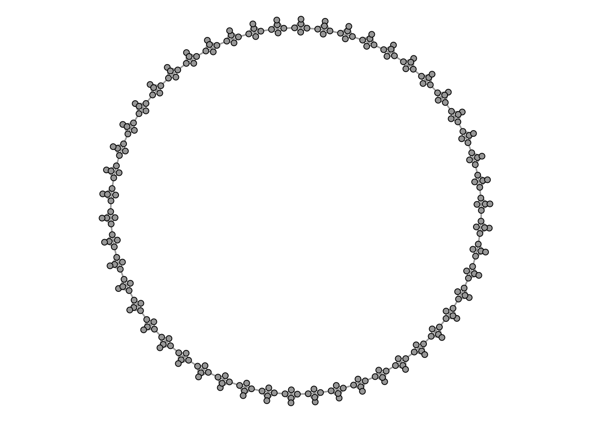
Intuitively, any clustering method should return a cluster for each clique, so we would expect to find 50 clusters of size 5.
clu_louvain <- cluster_louvain(K50)
table(membership(clu_louvain))
1 2 3 4 5 6 7 8 9 10 11 12 13 14 15 16 17 18 19 20 21 22 23 24
10 10 10 10 10 10 15 10 10 10 10 10 10 10 10 15 10 10 10 10 10 10 10 10 However, the Louvain method merges multiple cliques together to form a rather unintuitive clustering. This is a consequence of the resolution limit. The algorithm fails to resolve the smaller clusters because merging them into bigger clusters actually increases the modularity.
A clustering algorithm that fixes this issue is the so called Leiden algorithm (Traag et al. 2019). It is available in igraph via cluster_leiden() and can essentially be used as a drop-in replacement for cluster_louvain(). When used with the CPM (Constant Potts Model) objective function, it avoids the resolution limit entirely.
clu_leiden <- cluster_leiden(
K50,
objective_function = "CPM",
resolution = 0.5
)
table(membership(clu_leiden))
1 2 3 4 5 6 7 8 9 10 11 12 13 14 15 16 17 18 19 20 21 22 23 24 25 26
5 5 5 5 5 5 5 5 5 5 5 5 5 5 5 5 5 5 5 5 5 5 5 5 5 5
27 28 29 30 31 32 33 34 35 36 37 38 39 40 41 42 43 44 45 46 47 48 49 50
5 5 5 5 5 5 5 5 5 5 5 5 5 5 5 5 5 5 5 5 5 5 5 5 Choosing the right resolution parameter can, however, be tricky in practical context. A common heuristic is to set the resolution parameter as follows.
r <- quantile(degree(karate))[2] / (vcount(karate) - 1)
r 25%
0.06060606 leidenc <- cluster_leiden(
karate,
objective_function = "CPM",
resolution = r
)The resulting clustering is shown in Figure 4.9.
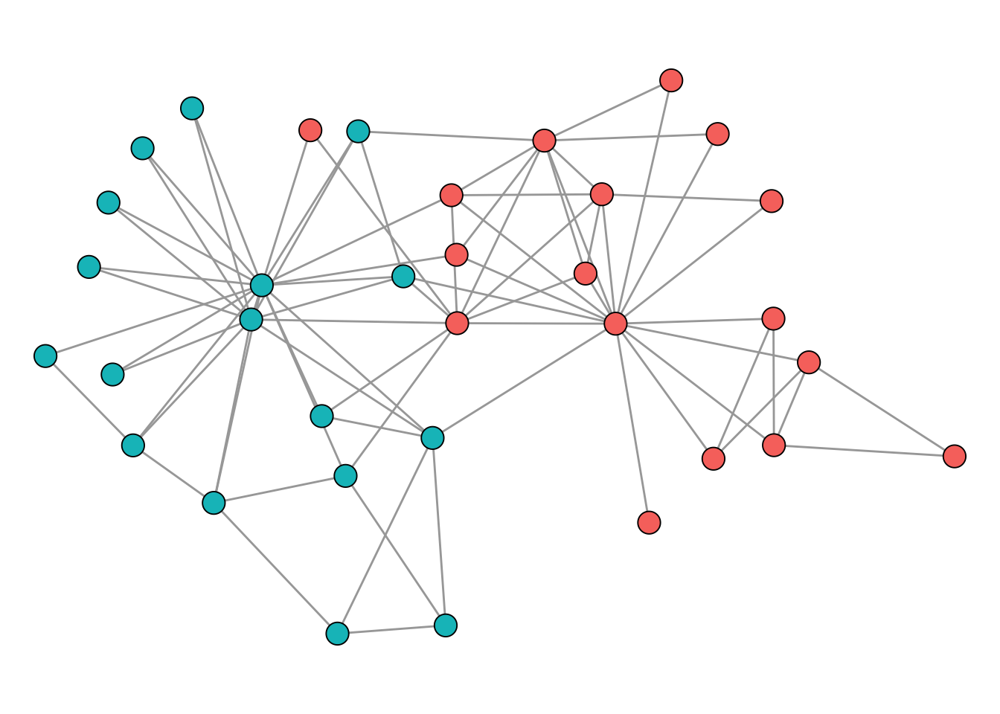
Comparing Figure 4.7 and Figure 4.9, we can see that the Leiden algorithm with this resolution parameter produces a different partition than the optimal modularity solution. Neither result is inherently more “correct” than the other. As discussed at the start of this section, there is no universal definition of what a community is, and different methods (and different parameter settings) operationalise the concept differently. The optimal modularity partition maximises one particular quality function; the Leiden CPM partition optimises another. By tuning the resolution parameter in cluster_leiden(), we could obtain a partition that matches the modularity-optimal one, but that would just mean we have chosen parameters to agree with a specific criterion, not that we have found the “true” communities.
In practice, this means that community detection results should always be interpreted with care. It is good practice to try multiple algorithms and parameter settings, and to evaluate the results against substantive knowledge about the network. If different methods consistently identify the same groups, we can be more confident that the structure is real. If they disagree, the differences themselves can be informative about the ambiguity of group boundaries in the network.
4.4 Blockmodeling
Community detection focuses on finding groups of nodes that are densely connected internally. Blockmodeling takes a slightly different perspective: it groups nodes based on patterns of connections, not just density. Two nodes belong to the same block if they relate to other blocks in similar ways, regardless of whether they are connected to each other. This makes blockmodeling particularly useful for role analysis in sociology and organisational context.
Several packages implement different kinds of blockmodels but the most basic deterministic and commonly used approaches can be found in the package blockmodeling (Žiberna 2007, 2008, 2014).
We illustrate blockmodeling on a random network with 3 dense blocks of size 20.
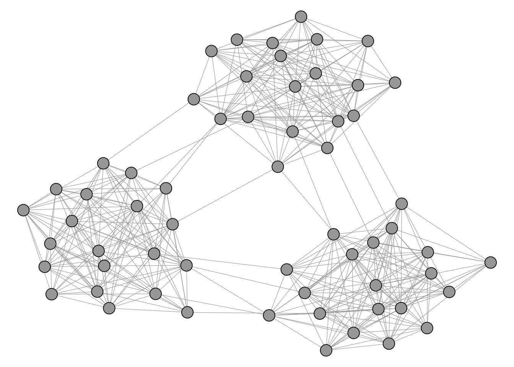
Compared to community detection, blockmodeling requires us to specify more about the structure we expect to find. The main function optRandomParC() from the blockmodeling package takes the adjacency matrix as input. We then define a block structure matrix (blk) that describes our expectation for each pair of blocks. Each cell specifies a block type: "com" (complete) means we expect all possible ties to be present, while "nul" (null) means we expect no ties. In the example below, we place "com" on the diagonal and "nul" on the off-diagonal, which corresponds to the familiar clustering scenario where nodes are densely connected within groups and sparsely connected between them. The function then tries multiple random starting partitions (rep) and optimises each one, returning the best assignment of nodes to blocks.
A <- as_adjacency_matrix(g)
## define expected block structure: complete on diagonal, null off-diagonal
blk <- matrix(
c(
"com", "nul", "nul",
"nul", "com", "nul",
"nul", "nul", "com"
),
nrow = 3
)
blk [,1] [,2] [,3]
[1,] "com" "nul" "nul"
[2,] "nul" "com" "nul"
[3,] "nul" "nul" "com"res <- optRandomParC(
M = A,
k = 3, ## number of blocks
approaches = "bin", ## binary blockmodel
blocks = blk, ## expected block structure
rep = 5, ## random starting partitions
mingr = 20, ## min block size
maxgr = 20 ## max block size
)
Starting optimization of the partiton 1 of 5 partitions.
Starting partition: 3 2 3 2 1 1 1 1 3 3 3 3 2 2 1 1 2 1 2 2 2 2 2 1 2 3 1 2 1 3 1 3 2 2 3 2 2 3 2 1 1 1 1 3 1 3 3 3 3 1 2 3 3 1 2 2 3 1 1 3
Final error: 364
Final partition: 3 3 3 3 3 3 3 3 3 3 3 3 3 3 3 3 3 3 3 3 2 2 2 2 2 2 2 2 2 2 2 2 2 2 2 2 2 2 2 2 1 1 1 1 1 1 1 1 1 1 1 1 1 1 1 1 1 1 1 1
Starting optimization of the partiton 2 of 5 partitions.
Starting partition: 2 3 1 2 1 3 1 1 3 3 1 3 3 3 2 1 3 2 1 1 2 1 3 1 2 1 3 2 3 2 3 3 2 2 3 1 3 2 3 1 2 2 3 1 1 3 3 2 1 1 2 2 1 2 2 2 1 1 2 3
Final error: 364
Final partition: 1 1 1 1 1 1 1 1 1 1 1 1 1 1 1 1 1 1 1 1 3 3 3 3 3 3 3 3 3 3 3 3 3 3 3 3 3 3 3 3 2 2 2 2 2 2 2 2 2 2 2 2 2 2 2 2 2 2 2 2
Starting optimization of the partiton 3 of 5 partitions.
Starting partition: 3 1 2 3 2 3 3 3 3 2 1 3 2 3 3 3 1 2 2 3 1 3 3 1 3 2 1 1 1 1 3 1 1 1 3 2 2 2 3 2 3 1 3 3 1 1 2 2 2 2 2 2 1 2 1 1 2 1 2 1
Final error: 364
Final partition: 3 3 3 3 3 3 3 3 3 3 3 3 3 3 3 3 3 3 3 3 1 1 1 1 1 1 1 1 1 1 1 1 1 1 1 1 1 1 1 1 2 2 2 2 2 2 2 2 2 2 2 2 2 2 2 2 2 2 2 2
Starting optimization of the partiton 4 of 5 partitions.
Starting partition: 1 2 1 1 2 1 2 1 3 1 3 2 3 3 2 3 1 3 1 2 3 1 3 2 1 3 1 1 1 1 2 2 3 2 3 1 1 1 1 3 3 2 2 2 1 3 2 2 2 2 1 2 3 3 3 3 2 3 2 3
Final error: 364
Final partition: 3 3 3 3 3 3 3 3 3 3 3 3 3 3 3 3 3 3 3 3 1 1 1 1 1 1 1 1 1 1 1 1 1 1 1 1 1 1 1 1 2 2 2 2 2 2 2 2 2 2 2 2 2 2 2 2 2 2 2 2
Starting optimization of the partiton 5 of 5 partitions.
Starting partition: 2 3 2 3 2 1 3 3 2 3 1 1 3 1 1 1 3 2 3 1 2 3 1 3 1 1 3 3 3 1 1 2 2 2 3 1 2 2 2 2 2 3 2 2 3 3 2 1 2 3 3 1 3 1 1 1 2 1 2 1
Final error: 364
Final partition: 1 1 1 1 1 1 1 1 1 1 1 1 1 1 1 1 1 1 1 1 3 3 3 3 3 3 3 3 3 3 3 3 3 3 3 3 3 3 3 3 2 2 2 2 2 2 2 2 2 2 2 2 2 2 2 2 2 2 2 2
Optimization of all partitions completed
All 5 solutions have err 364 The result can be accessed with clu().
clu(res) [1] 3 3 3 3 3 3 3 3 3 3 3 3 3 3 3 3 3 3 3 3 2 2 2 2 2 2 2 2 2 2 2 2 2 2 2 2 2 2
[39] 2 2 1 1 1 1 1 1 1 1 1 1 1 1 1 1 1 1 1 1 1 1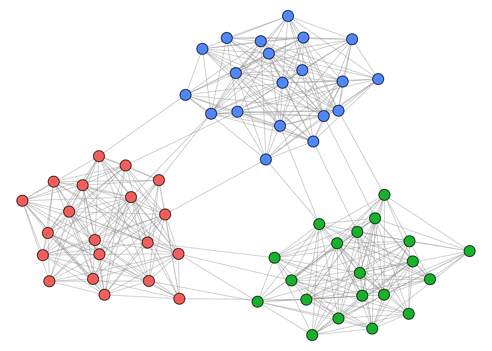
Note that blockmodeling is computationally expensive and best suited for small networks. Consult the package documentation for more involved block types. For signed networks, a dedicated blockmodeling approach is available in the signnet package (see Chapter 6).
4.5 Core-Periphery
Community detection aims to find clusters or groups of nodes within the network that are more densely connected to each other than to nodes outside the group. The core-periphery structure, in contrast, posits that a network is organized into a densely connected core and a sparsely connected periphery. The core consists of central nodes that are highly connected to each other and also to peripheral nodes. Peripheral nodes, on the other hand, have fewer connections and are mostly connected to nodes in the core rather than to each other.
The difference between the two concepts becomes clear when looking at the adjacency matrix. In a community structure, dense blocks appear along the diagonal, each corresponding to a tightly connected group (Figure 4.12, left). In a core-periphery structure, a single dense block sits in one corner of the matrix, representing the core, while the rest remains sparse (Figure 4.12, right).
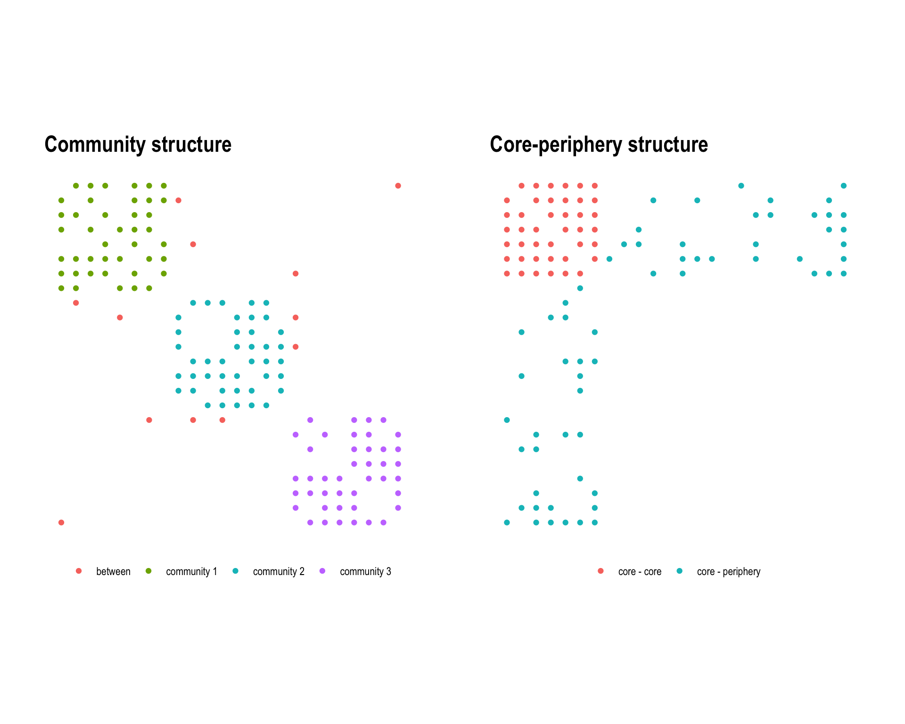
Core-periphery structures can appear in many different contexts. In international trade networks, a small number of wealthy, industrialised countries form a densely interconnected core, while developing nations at the periphery trade primarily with core countries but rarely with each other. In scientific collaboration networks, a core of highly productive researchers co-author with many others and with each other, while peripheral researchers have fewer and more localised collaborations. The concept was originally formalised by Borgatti and Everett (2000), who proposed a discrete core-periphery model.
The idea of the model is that nodes either belong to the core, or the periphery. The membership of nodes is derived by optimizing the correlation between the observed adjacency matrix and an idealized adjacency matrix as shown in Figure 4.12 (right).
Several such optimization techniques are implemented in the function core_periphery() of the netUtils package.
To illustrate the function, we use the core_graph from the networkdata package, a small network with a perfect core-periphery structure.
data("core_graph")Figure 4.13 shows the graph together with its adjacency matrix.
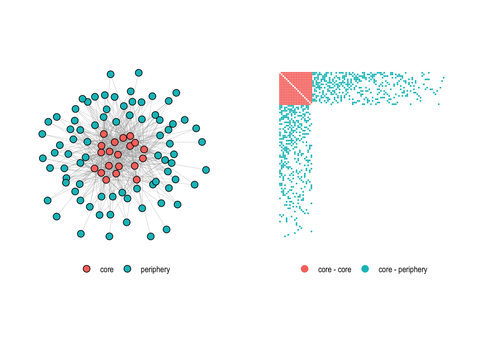
Using the core_periphery() function, we try to recover the core-periphery structure of this graph.
cp <- core_periphery(core_graph)
cp$vec
[1] 1 1 1 1 1 1 1 1 1 1 1 1 1 1 1 1 1 1 1 1 0 0 0 0 0 0 0 0 0 0 0 0 0 0 0 0 0
[38] 0 0 0 0 0 0 0 0 0 0 0 0 0 0 0 0 0 0 0 0 0 0 0 0 0 0 0 0 0 0 0 0 0 0 0 0 0
[75] 0 0 0 0 0 0 0 0 0 0 0 0 0 0 0 0 0 0 0 0 0 0 0 0 0 0
$corr
[1] 1The function returns a list with two entries. The first, vec, returns the membership of nodes. It is one if a node is in the core and zero if not. The second entry corr represents the correlation of the adjacency matrix with the ideal adjacency matrix derived from the vec memberships. In this case, the correlation is one meaning that we have discovered a perfect core-periphery structure.
The function also has an argument which allows to use different optimization techniques to find core-periphery structures (the problem of finding the optimal solution is computationally too complex). To illustrate this on a real-world network, we use the US domestic flights network from the networkdata package. This network connects 276 airports based on scheduled flights and is a natural candidate for core-periphery analysis: major hub airports (Atlanta, Denver, Dallas-Fort Worth, etc.) serve as a densely interconnected core, while smaller regional airports on the periphery connect primarily to these hubs.
data("us_flights")
cp_dc <- core_periphery(us_flights, method = "rk1_dc")
cp_dc$corr[1] 0.8092107sum(cp_dc$vec)[1] 45The rank-one approximation via degrees (rk1_dc) identifies 45 core airports with a correlation of 0.81. This is a strong sign that the structure of the US airline system follows a core-periphery pattern. We can compare the three available optimization methods.
cp_ec <- core_periphery(us_flights, method = "rk1_ec")
cp_ga <- core_periphery(us_flights, method = "GA", iter = 2500)
c(rk1_dc = cp_dc$corr, rk1_ec = cp_ec$corr, GA = cp_ga$corr) rk1_dc rk1_ec GA
0.8092107 0.8097646 0.8102048 Similar as rk1_dc, rk1_ec is a rank-one matrix approximation methods which infers an idealized structure from the eigenvectors of the adjacency matrix instead of the degrees. These methods are extremely fast but might result in a lower quality of the result compared to GA which runs a genetic algorithm to search for the optimal solution. In our case, however, the genetic algorithm does not seem to find a much better solution than the rank-one approximations, which is a good sign that the fast methods are sufficient for the US domestic flights network.
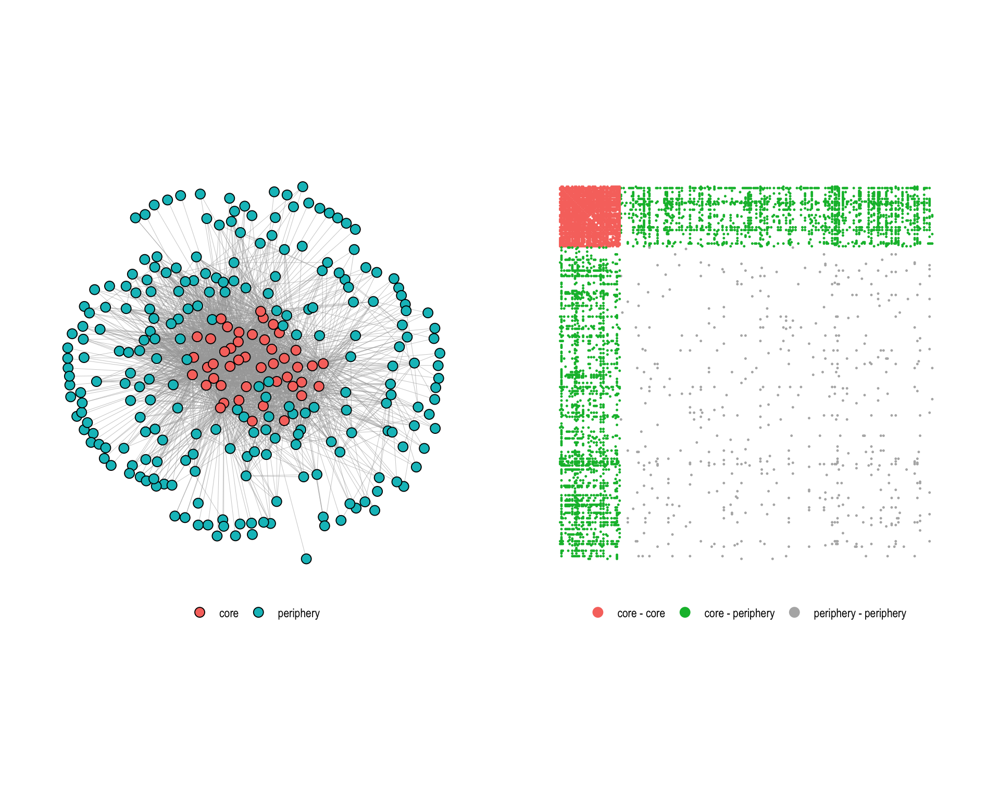
References
Blondel, Vincent D, Jean-Loup Guillaume, Renaud Lambiotte, and Etienne Lefebvre. 2008. “Fast Unfolding of Communities in Large Networks.” Journal of Statistical Mechanics: Theory and Experiment 2008 (10): P10008.
Borgatti, Stephen P, and Martin G Everett. 2000. “Models of Core/Periphery Structures.” Social Networks 21 (4): 375–95.
Clauset, Aaron, Mark EJ Newman, and Cristopher Moore. 2004. “Finding Community Structure in Very Large Networks.” Physical Review E 70 (6): 066111.
Traag, Vincent A, Ludo Waltman, and Nees Jan van Eck. 2019. “From Louvain to Leiden: Guaranteeing Well-Connected Communities.” Scientific Reports 9 (1): 5233.
Žiberna, Aleš. 2007. “Generalized Blockmodeling of Valued Networks.” Social Networks 29 (1): 105–26. https://doi.org/10.1016/j.socnet.2006.04.002.
Žiberna, Aleš. 2008. “Direct and Indirect Approaches to Blockmodeling of Valued Networks in Terms of Regular Equivalence.” Journal of Mathematical Sociology 32 (1): 57–84. https://doi.org/10.1080/00222500701790207.
Žiberna, Aleš. 2014. “Blockmodeling of Multilevel Networks.” Social Networks 39: 46–61. https://doi.org/10.1016/j.socnet.2014.04.002.